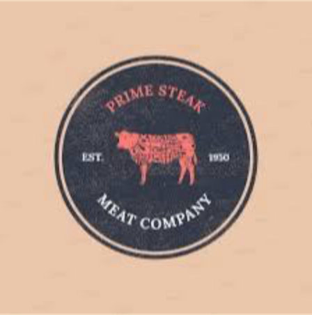
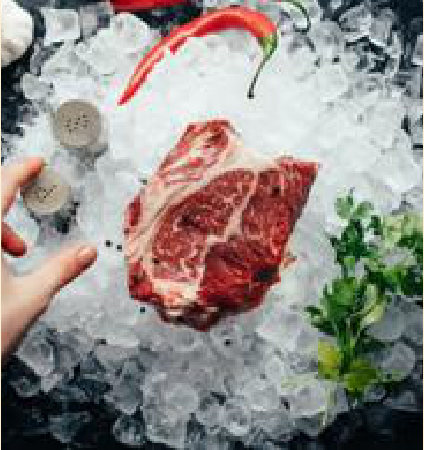
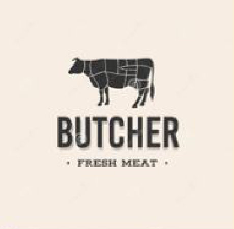
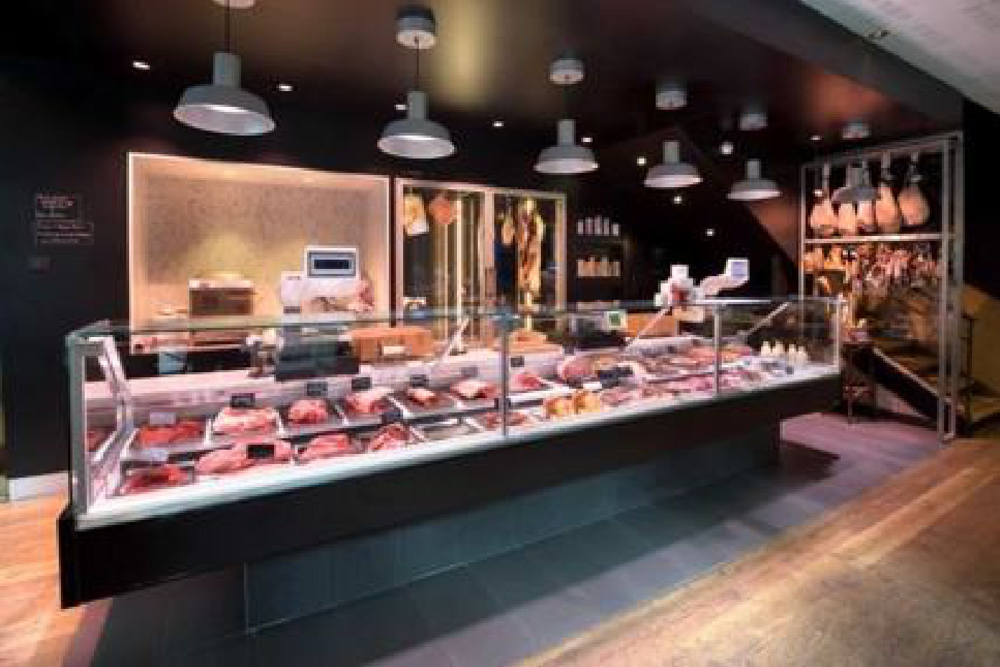
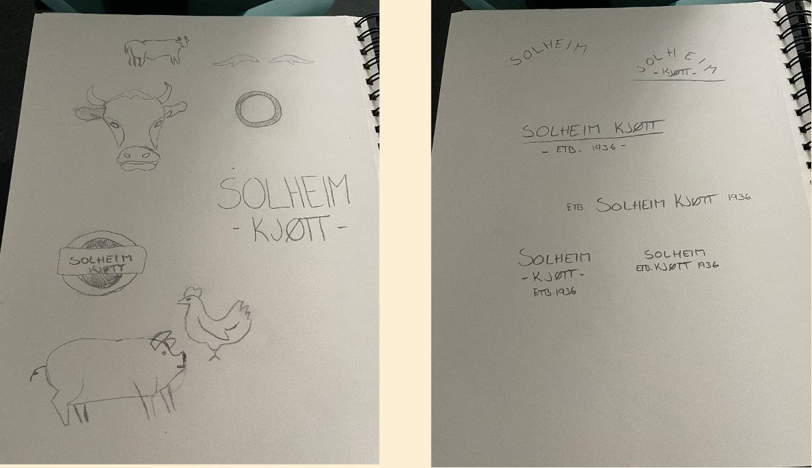
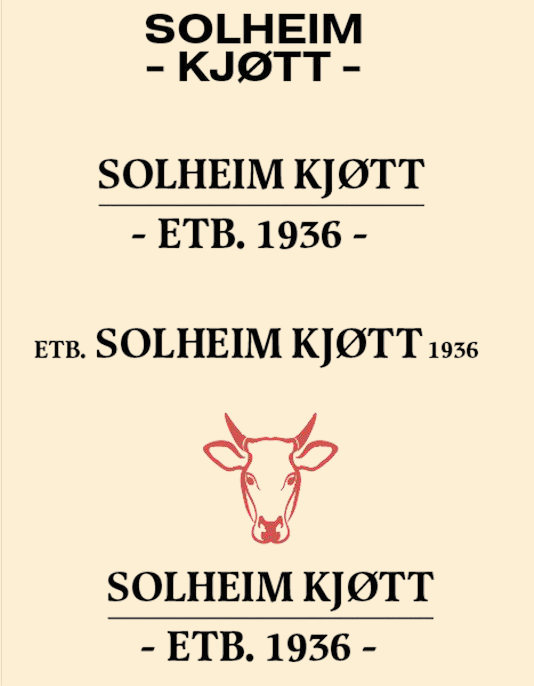
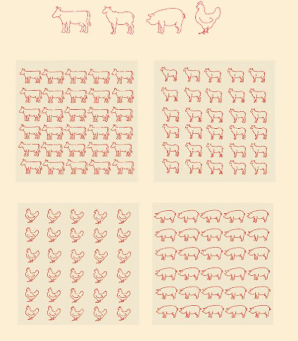

Prosess
Jeg startet med inspirasjon og håndtegnede skisser og jobbet videre med de beste ideene
digitalt. Underveis laget jeg en persona, Jonas på 28 år, som skal invitere venner på grillfest
og er glad i god mat og drikke. Han hjalp meg med å holde fokus på målgruppen gjennom
hele prosessen.







